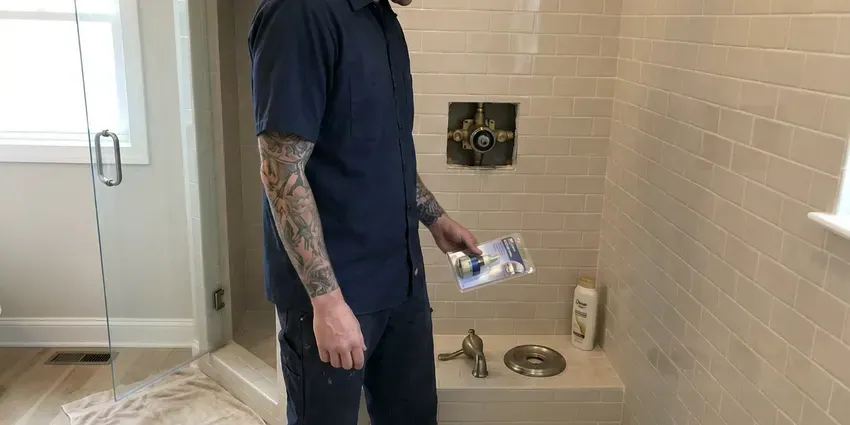

Faucet Installation in Franklin, TN
Already picked out your faucet? We will install the one you bought in Franklin, TN, or bring one that fits your sink.
- All Major Brands Installed
- Touchless and Pot Fillers
- Old Faucet Hauled Away
- Workmanship Guarantee

Book a Faucet Install in Franklin, TN
Our plumbers carry supply lines and stops for most kitchen and bath installs.
Faucet Installers Who Check the Fit First, Franklin, TN
BGV Plumbing handles single-hole, centerset, widespread and wall-mount faucets in Franklin. Each style mounts differently, and the wall-mount kind needs a valve set inside the wall before any tile goes up. Touchless faucets and pot fillers are on the list too. On remodels we schedule around the countertop crew.
Our expertise includes:
- Bathroom Lav Faucet Installation
- New Braided Supply Lines
- Kitchen Faucet Installs

Additional Bathroom Plumbing Services in Franklin, TN
From toilets to showers, our bathroom plumbing team in Franklin, TN handles repairs, installs, and upgrades with tidy, code-compliant work.




Franklin shower repair specialists


Customers
Why Choose BGV Plumbing for Faucet Installation in Franklin, TN?
Picking the faucet is half the job. We check the hole layout and your water hardness first, because hard water shortens cartridge life. A tall pull-down will not clear a low cabinet.
- Leak Test, Every joint gets a dry-towel check before we pack up.
- Flushed Lines, We flush the lines so grit stays out of the new cartridge.
- Fit Check, We check the hole count and measure deck thickness before mounting.
Citywide Coverage
Outlying neighborhoods are not an extra charge. The install costs the same in every part of town. No trip fee for the far side of town, and no surcharge for the second floor bath or a cramped corner vanity.
Experienced Team
Each tech carries a basin wrench. Rusted mounting nuts get cut with an oscillating multi-tool instead of being forced, which is how sinks get cracked. A tubing cutter rides along for copper stubs too.
Safety-First Approach
Cabinets and counters get covered before work starts. We lay a pad over stone edges and a drop cloth inside the base, because a dropped basin wrench chips quartz and a spilled supply line swells particleboard. Cleanup includes a vacuum pass.
Trusted Certified Franklin Plumbing Services Professionals
At BGV Plumbing, we are proud to offer certified plumbing services throughout Franklin, TN. Those papers on the wall mean something. Our plumbers hold recognized industry credentials, and they follow strict safety and quality rules on every repair, installation and maintenance call we run.
Call Us Now PHCC Plumbing Contractor Recognition
PHCC Plumbing Contractor Recognition Better Business Bureau (BBB) Accreditation
Better Business Bureau (BBB) Accreditation Angi Certified Pro
Angi Certified Pro ISO 9001 Quality Management Certification
ISO 9001 Quality Management CertificationKitchen and Bath Faucet Installation in Franklin, TN
Kitchen Faucet Swaps in Franklin
Removing the old kitchen faucet is often the slow part. Mounting nuts behind a double-bowl sink can be rusted solid, and we cut them off rather than crack the sink. Then the deck gets scraped clean. New faucet, new supplies, and a check that the sprayer hose clears the disposal.

Kitchen Faucet Installation in Franklin
Pull-down sprayers get yanked a thousand times a year. So we set the hose weight where the spout retracts cleanly and check that the hose does not snag on the shutoffs or the disposal when it pulls back, which is where most early kitchen leaks start. Both stops get new braided stainless supply lines. Before we pack up, we run both sides for several minutes and check the cabinet floor with a dry paper towel.
Bar and Prep Sink Faucets in Franklin, TN
Island prep sinks and wet bars get their own faucet. We hook bar faucets to an undersink filter cartridge when you want filtered water there, and we leave the cartridge where you can swap it without unloading the cabinet. Outdoor kitchens use fixtures rated for sun and weather. Before a freeze, homeowners here usually disconnect hoses, close crawlspace vents and let faucets drip on outside walls. We insulate or drain the outdoor lines to match.
Vessel Sink Faucets in Franklin, TN
Vessel sinks sit high, so the faucet has to sit higher. We use either a tall deck faucet or a wall spout, sized so water hits near the drain and not the rim where it splashes onto the counter. Reach matters as much as height. Too short and you bang your knuckles on the bowl.
Bathroom Faucet Swaps in Franklin, TN
Swapping a bathroom faucet usually includes the pop-up drain, because the lift rod connects through the faucet body. We set the drain flange in putty, switching to silicone on cultured marble or natural stone so nothing bleeds into the top. Handles get lined up last. We set them so both close at the same angle.
Commercial and ADA Faucets in Franklin, TN
ADA rules set faucet reach and handle force. Lever and sensor faucets are standard in commercial restrooms because accessibility rules require one-hand operation without twisting or tight grasping. Installs happen before you open or after you close. Fixtures go in with the spec sheet left for the inspector.
Faucet Upgrades in Franklin, TN
Going from a two-handle faucet to a touchless pull-down changes what is under the sink. You need a dry spot for the control box and either a battery pack or an outlet within reach. We check the outlet before you buy. A filter faucet adds 1/4-inch tubing from the cartridge to its own spout.

Commercial-Style Kitchen Faucets in Franklin
Commercial-style spring spout faucets are tall. Check the clearance to any shelf or window sill above the sink, since many stand 20 inches or more before you order. Any extra sink hole can hold a soap pump or side sprayer. The hose weight goes where the spout docks cleanly.
Faucet Installers Near Me in Franklin, TN
Local matters for a faucet job. We know which parts of town still have galvanized stubs behind the vanity and which went to PEX, and we pack the truck for it. It cuts out the trip to the supply house.
On arrival we lay a drop cloth in the cabinet and set out a bucket under the old supply lines. The price is set before a wrench comes out. The old faucet leaves with us, and the workmanship guarantee covers the hookup.
BGV Plumbing at a Glance
- Licensed and insured plumbers serving Franklin, TN
- 24/7 emergency service with same-day scheduling
- Upfront, flat-rate pricing before work begins
- 4.9-star rated by 932+ Tennessee customers
Franklin Map
Franklin Information
- Population
- 88,558
- Area codes
- 615/931/629
- Service area
- Franklin and towns within a 40 mile drive
- Nearby
- Spring Hill, Nashville, Smyrna, Murfreesboro
Private wells serve many rural homes in Tennessee, and some well water carries iron, sulfur or sediment that calls for filtration or treatment. We flush the supply lines and fit new braided connectors before we mount the faucet at your Franklin sink.
Talk to a Plumber
Call BGV Plumbing for honest, reliable plumbing from people who know the trade in Franklin, TN.
Our Specialized Plumbing Services in Franklin, TN
At BGV Plumbing, we handle the full list of plumbing services across Franklin, TN. We go from leak detection all the way to full system installations, for homes and commercial buildings, and we do it quickly at a fair price. Explore our core services below:


Our Faucet Install Steps in Franklin, TN
From the box to running water, this is the order we work in.
Call and Describe the Job
Call (615) 518-0893 or use the form and tell us the faucet model. We give you a price before we book.
Pick a Time
We set a two-hour arrival window that works for your Franklin home, including early mornings when we can.
Install and Leak Check
Our plumber mounts the faucet on new supplies and tests each joint with a dry towel.
Frequently Asked Questions About Faucet Installation in Franklin
Labor for a Franklin faucet installation usually falls between $150 and $400. A simple swap with working stops and an easy removal sits near the bottom of that range. Seized nuts push it up. Your faucet is priced separately, anywhere from a basic builder model to a several-hundred-dollar designer pull-down.
We do, and it is part of the price. The old faucet and its supply lines go in our truck, and we scrape the old putty off the deck before setting the new one. Solid brass bodies get recycled.
Two warranties, really. Your faucet carries its own manufacturer warranty, lifetime on many brands, and our workmanship guarantee covers the hookup. We come back if our work leaks.
Some people do fine with a basic one. The trouble is usually under the sink, where rusted mounting nuts and seized shutoffs turn a simple job into a cracked sink or a flooded cabinet. We also see a lot of cracked plastic nuts from overtightening.
Forty-five minutes to an hour and a half for a standard swap. Wall-mount faucets and pot fillers take longer, often a full day across two visits, because the valve or supply line goes in before the finish wall. We schedule around the tile work.
Our labor is covered by a written workmanship guarantee. You will see the term in writing on the invoice. Any leak at a joint we made gets fixed free, while the fixture itself falls under the manufacturer's warranty.
Count the holes and measure the spacing. A single-hole faucet can cover extra holes with a deck plate, while a widespread model needs three holes spread about 8 inches across. We check before you buy.
Private wells serve many rural homes in Tennessee, and some well water carries iron, sulfur or sediment that calls for filtration or treatment. Minerals settle in the cartridge and the aerator screen, so flow drops and the seals wear faster than they should. Cleaning the aerator twice a year helps. Ceramic disc cartridges hold up better than older rubber-washer designs.
What People Are Saying About Our Plumbing Experts?

Angela D.
Our sump pump quit during a storm and the water was an inch from the basement carpet. BGV Plumbing put in a new pump with a battery backup that same evening. We have had two heavy rains since. It kicked on both times.
Sump Pump · Murfreesboro, TN
James P.
Our restaurant had a slow leak at the hand sink that was rotting the cabinet base. BGV Plumbing came in at six in the morning before prep, replaced the trap and both supply lines, and was packed up before my first cook clocked in.
Commercial Plumbing · Franklin, TNKaren W.
After our third pinhole leak in copper, we stopped patching. BGV Plumbing gave us a written plan room by room and repiped the house in PEX while we stayed in it. The crew covered our floors every morning and cleaned up every night.
Repiping · Gallatin, TN
Emily R.
The shutoff valve under our kitchen sink snapped off in my hand on a Sunday morning. BGV Plumbing had someone out by early afternoon. He replaced both angle stops with quarter turn valves and showed me where our main shutoff was, which I honestly did not know.
Plumbing Repair · Murfreesboro, TNPatricia H.
We had a slab leak that two other companies could not find. BGV Plumbing located it in under an hour with a listening device. They rerouted the line through the attic instead of breaking up the floor, so we kept our kitchen tile.
Slab Leak Repair · Gallatin, TN
Nathan E.
Our tankless heater kept throwing an error code and shutting off mid shower. The tech flushed the heat exchanger, which was full of scale, and replaced a bad flow sensor. Hot water has been steady for half a year now.
Water Heater Repair · Murfreesboro, TN